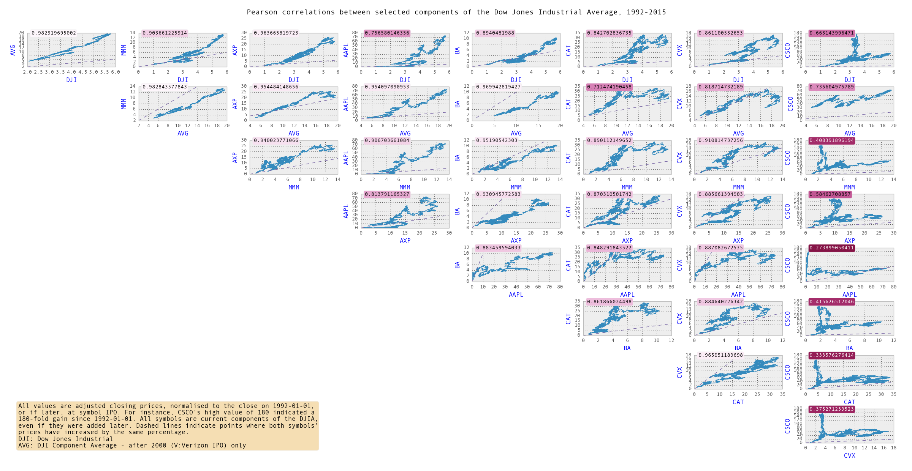

the status of things at this very moment [March 3, 2016]
I have been at school for a couple months. It's pretty good. Summer's gonna suck because I'll be taking 6 classes.
I had a slow think (although it was intermittent, over like 3 or 4 weeks) about what employability means and what an employable person does. I think I would rather be employed than employable.
I competed at Battlesnake 2016 in a team with Brendon Earl. I only did it for the free shirt, but then they said they were out of free shirts. My expectations were pretty low because I know nothing about heroku, but we surpassed them greatly, because our snake got to the Classic tier finals. But then we died right away. His name was brendon but a snake because Brendon didn't like my first suggestions, which were splunt, flanch, and jchurnch, in that order. Rest in peace.
I haven't been able to stick to a side project. Part of that is that I'm in school now and school is so interesting and also I have to do it or I'll be sent back to laos. Here are some of the things I thought about doing:
A web app that would help you structure and plan out your courses at UVic, term by term. The phrase "critical path dependency" floated around my mind. After about a week of prodding at this problem it came to my attention that a bunch of my friends had the same idea independently. So we all joined forces. Then we didn't do anything. The most interesting thing I got was a CSV full of UVic courses and descriptors (there are about 5000 of them), scraped off the UVic calendar site, which I can prod about with python/pandas. I would like to point out for the record that I got all the scraping done before I joined the other team.
Some kind of program that would grab Quandl information and look for correlations, because, you know, financial industry = $$$$ = get to eat at tacofino three times a day. Prodding around at this taught me that a lot of things are pretty correlated (R-squared over 0.96) even if there's no obvious causation. Also, I read Alan Greenspan's The Map and the Territory 2.0 which I realised is full of exactly that kind of analysis, and also he's been doing it for decades. But I got some pretty neat shots out of it.
a better version of tectonics.js and I am not sure if this one is done or not because I find it mildly interesting

{kind=link}